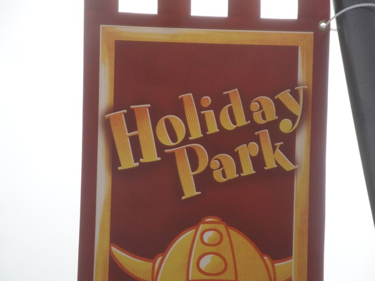
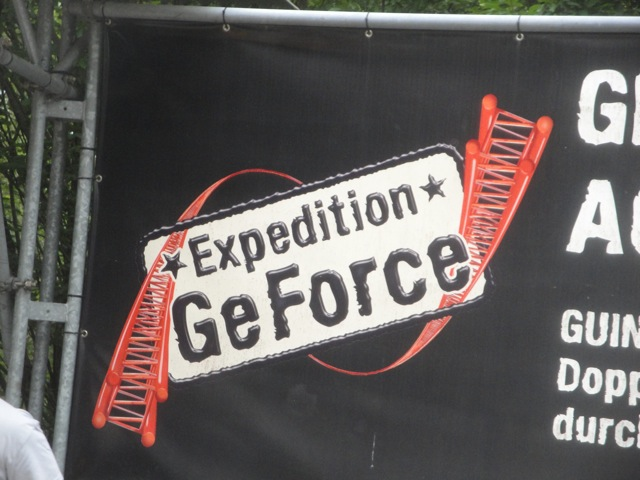
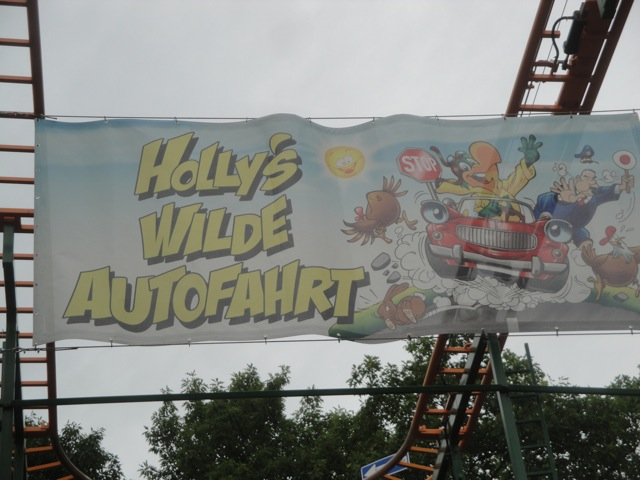
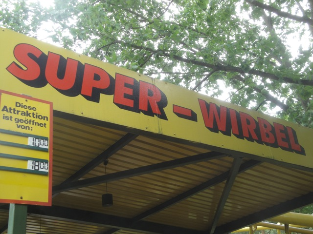
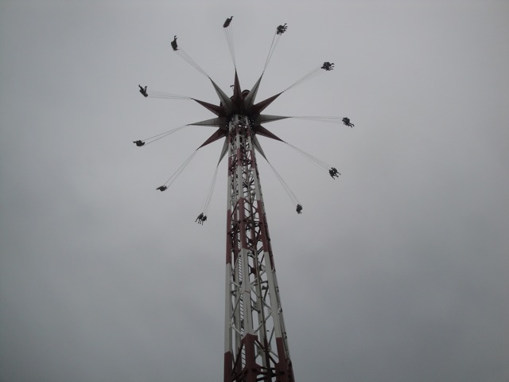
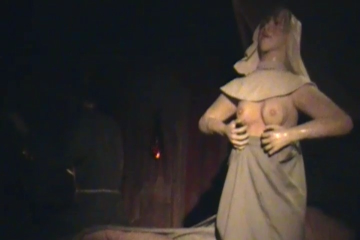
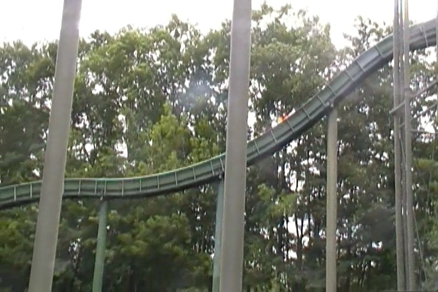
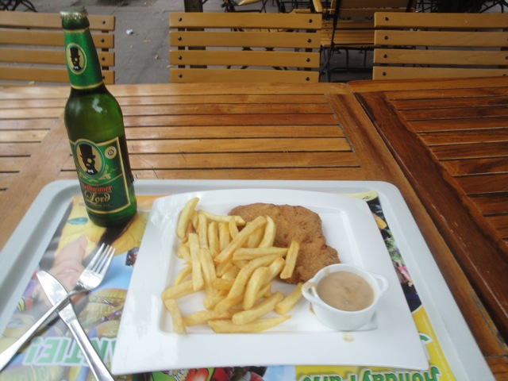

| |
Holiday Park Review

Holiday Park is a small little park that is mainly known by roller coaster enthusiasts for one simple reason. Yep, that's right. Expedition Ge Force. One of the best roller coasters on the planet resides in this small little German park. And yeah. It's good. It's really f*cking good. As good as people say. But keep in mind that we also write roller coaster reviews and we have one for Expedition Ge Force down below (as you should've expected). So yeah. That alone is reason enough to make it out to Holiday Park. But on top of all that, it's actually a really nice little park. It has a very nice balance in its ride selection. It has some good flat rides, a fun water ride collection, a very enjoyable dark ride collection, and even its other coasters are fun. And since I last visited the park, they actually got a clone of Superman Ultimate Flight, which I really enjoyed and am happy to see having clones of it pop up all around the world. And yeah, it's just a really fun and enjoyable park. In the past, I heard that this park was mostly just a small little park plus Expedition Ge Force. But it seems like over the past few years, the park itself really grew and expanded, adding a lot more new rides, taking out some of the old outdated rides and replacing them with some new rides, including another really great roller coaster. So while Holiday Park may not be the biggest or most exciting park in the world, do keep in mind that not only does this park have one of the best roller coasters in the whole freaking world, but they also have a lot of other fun attractions, and I only see them growing in the future. Definetly make sure to stop on by when visiting Germany.
Rollercoasters
There is a link to a review of all the Rollercoasters at Holiday Park.
(Please keep in mind that there is no review of Sky Scream since didn't exist when I last visited.)
Top Coasters
Expedition Ge Force Review

Past Coasters
Holly's Wilde Auto Fahrt Review

Super Wirbel Review

Flat Rides
Here are the reviews of all the Flat Rides at Holiday Park. It's actually not a bad flat ride collection. I know there are two flat rides that I really enjoyed and thought were done superbly. First up, their Starflyer. This is currently the biggest Starflyer I have ridden and the only one that is of proper height. I know I've been to parks with much bigger Starflyers, but I never get to ride them thanks to factors such as horrible operations and climbing on top of said Starflyer. And I got to tell you, the big Starflyers are really freaking cool!! Granted, they don't freak me out as much as your typical guest due to my lack of fear of heights and track record of doing insane things such as cliff jumping, but it really is a lot of fun. It's certainly much more fun than a Windseeker which just feels like a family ride up in the air. It's just a really fun ride. And finally, they have an Intamin 2nd Generation Drop Tower. These things are just awesome rides. I love these things. Yeah, they're far from the best drop tower ever and there are bigger, better, and freakier drop towers out there, but f*ck it!! I just REALLY enjoy these rides. And it is of a decent size. I enjoy the view of Expedition Ge Force. The only problem I have is with the theming in the line. But hey. Whatever. Just a nitpick. Everything else they have is just your typical stuff. Carousel, Pirate Ship, that's about it.

"Oh, don't worry. Those itty bitty chains are TOTALLY able to support all that weight." =)
Dark Rides
Holiday Park has a really interesting dark ride. It's definetly one of those not in America dark rides. All right. The story of this dark ride is that there's this couple in love in a tower. However, they are being attacked by this dragon. So the girlfriend responds by flashing her boobs. Uh...great. It's certainly an intersting dark ride and I'm happy that it is currently still at the park now that its ran by Plopsa, who has definetly made Holiday Park into a family park. So I'm happy that this ride is still at the park and that they didn't try and censor it or anything. But then again, this is Europe. They're not as paranoid about sex as we are in the United States. So yeah. Definetly check out their interesting dark ride.

This is the stuff that American Parents have nightmares over. =)
Water Rides
Holiday Park has two water rides. A log flume and a rapids ride. I can't judge their rapids ride, but I can say this. Their Log Ride is really good. Like really good. It's not quite good enough for the Top 10 Water Rides List, but DAMN!!! It was seriously considered and probably would've grabbed a low spot if I hadn't ridden some really amazing water rides. It has some really good theming, a fun little backwards section, and a double drop at the end, which is just a ton of fun. I really like this log flume and it's one of those water rides that I'd totally recommend riding if you decide to visit Holiday Park. And considering how much I liked their log flume, I have high expectations for their rapids ride.

This ride will get you wet and you will enjoy it.
Dining
The dining at Holiday Park is great! I'm sure to most people, it's just nothing special and just your ordinary cuisine, but you have to keep in mind. I'm from the United States, and the cuisine here is not found easily. Yeah, I'm sure I can find some German Resteraunt in L.A somewhere, but it's always best in the home country and I love German Cuisine. I really love it. We need more Schnitzel in America! Cause yeah, Schnitzel, Fries, and High Quality German Beer. Now that's a meal for me!! I could live off this stuff!!! And I'm sure the rest of the food in the park is good. They did offer us free ice cream and muffins. Those were good. So yeah. The food at Holiday Park is definetly recommended.

Mmm. Schnitzel and Beer. *drool*
Theming and Other Attractions
Here are the reviews of all the other stuff at Holiday Park. Well, outside the rides, there's really not much. The theming at Holiday Park is practically non-existant. Now, I know that in the past, it was worse as it was truely bare and solely about rides. Since Plopsa took over, it seems to have added a little bit of theming. So this may have improved since my last visit, but yeah. This is not a park with a lot of theming. And as far as other stuff to do, I can't think of anything. The only thing I can think of was the fact that I saw a sign for a show. So, that's something. And I'm sure they have an arcade and other random things to do. But don't expect anything fancy or cool. This park is all about the rides.
In Conclusion
Holiday Park is a really fun little amusement park that has really grown over the past few years. The park was already well known for having one of the best roller coasters in the world. But over the past few years, it's grown and now has some flat rides, a lot more family rides, tune ups on their water rides, and even another really good coaster. I know the coaster enthusiasts are already on their way for Expedition Ge Force, and yeah. You're going to want to get a lot of rides on that. But don't just come here to credit whore. I'd really recommend actually visiting the park. And I've heard that Holiday Park is only getting better and better, which is always a good thing to hear. Definetly make sure to check this fun little German Park out.
Enthusiast FAQs.
*Are there kiddy coaster restrictions? - Holiday Park doesn't have a kiddy coaster.

Tips
*Ride Expedition Ge Force multiple times.
*Don't just treat this park as a credit whoring stop.
*Try the Schnitzel.
*Have Fun!!!!
Theme Park Category:
Amusement Park
Location
Hassloch, Rhineland-Palatinate, Germany
Last Day Visited
June 24, 2012
Video
I didn't shoot enough footage to make a video. At least not the fast paced, Expediton Ge Force laced video I want to make.
Complete Update List
2012
TPR's Mega Europe Trip
Here's a link to the parks website.
Home
|